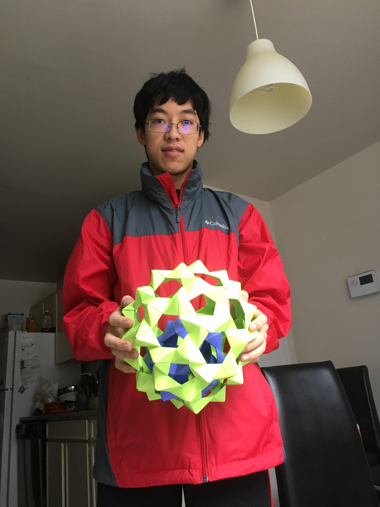

Raymond Luo
|  |
Name: Raymond Luo Current Occupation: Stay-at-home student (Coronavirus) School: Montgomery Blair High School STEM Magnet Program My name is Raymond, and I like origami! In terms of origami, I've been folding since first grade, and I usually fold other people's designs, ranging from complex designs like Satoshi Kamiya's phoenix to simpler designs like the balls made from Tom Hull's PHiZZ units in the image to the left. I've been working on designing my own origami, but I'm still learning. Related to that, I've been trying to learn how to fold box-pleated designs from a crease pattern so that I can see how other people design their origami. I'm hoping to improve over time. On another note, some other things I do are Rubik's cubes, cello, programming, biking, and crew. I also volunteer and teach computer science classes for American Chinese School and some other places. Contact Info Email: rmdluo@gmail.com Phone: 301-661-6011 |
|---|